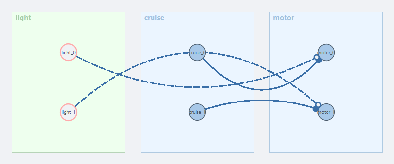

Braitenberg Vehicle III: Intrinsic Drive
This tutorial picks up exactly where Braitenberg Vehicle II left off. There, the robot only ever moved because something was pulling on its sensors — crossed or same-side, excitatory wiring only ever reacts. You saw the cost of that in Step 8: the instant the patch falls out of sensor range, both motors get a flat-zero command and the robot stops dead, no matter how many patches you scatter to catch it in time.
This time you fix that from the inside: a tiny addition to the circuit gives the robot a reason to move that has nothing to do with what it senses. Braitenberg called this an intrinsic drive, and vehicles that have one — his Vehicle 3 — behave noticeably more like creatures than reflex machines.
What you will build
| Step | What happens |
|---|---|
| Add a constant drive | Both motors get a steady baseline speed from a ConstantLayer — no sensors wired in at all |
| Make the sensor inhibitory | The light sensor now subtracts from that baseline instead of adding to it |
| Observe "love" | The robot cruises on its own, slows as it nears the patch, and settles close to it instead of colliding or stopping |
| Cross it | Same inhibitory wiring, crossed instead of same-side — the robot flees the patch, but, unlike Vehicle II, never stops moving |
Background — the missing ingredient
Vehicle 3 keeps the exact same body and the exact same sensor as Vehicle 2. Only two things change:
- The sensor connection becomes inhibitory (a negative weight) instead of excitatory.
- A
ConstantLayerfeeds both motors a steady baseline value, completely independent of any sensor.
That baseline is the intrinsic drive: with it, the robot moves even when there is nothing around to react to. The sensor no longer causes motion — it only modulates motion that is already happening, speeding up one wheel relative to the other or slowing the robot down as it nears a source. Braitenberg called the resulting behaviour love: the vehicle approaches a stimulus and settles near it, rather than lunging at it (pure excitation) or needing it just to move at all (Vehicle II's problem).
Step 1 — Reopen your Vehicle II network
Launch the simulator, click the Brain tab, and select the network you saved at the end of Vehicle II (named Braitenberg, unless you called it something else). Click ⬡ Open visualizer.
You should see the same two nodes as before: light (a GradientSensor, n=2, scale=60, gradient=A) and motor, however you last wired them. The exact weight matrix on that connection doesn't matter — you're about to replace it.
Skipped Vehicle II?
Build the same starting point: a GradientSensor named light (n=2, gradient='A', scale=60) and a MotorLayer named motor, with one connection between them. See Vehicle II, Step 4 and Step 5, for the details.
Step 2 — Add the constant drive
- Drag a ConstantLayer chip from the palette onto the canvas.
- In the dialog, set:
- name →
cruise - n →
2 - value →
60
- name →
- Confirm. The
cruisenode appears with two neuron circles.
ConstantLayer has no separate scale factor — value is the number that reaches the motor. Setting it to 60 matches light's own scale, which will matter once the sensor is wired in (Step 5).
Step 3 — Wire the cruise baseline
Drag from cruise onto motor. In the weight-matrix editor, choose Manual and enter the identity matrix:
cruise_0 (left) |
cruise_1 (right) |
|
|---|---|---|
motor_0 (left wheel) |
1 | 0 |
motor_1 (right wheel) |
0 | 1 |
Confirm and Save.
Step 4 — Run it with no patch at all
Go to the World tab and delete every patch in the arena (right-click each one). Press ▶ Run.
The robot drives forward on its own, at a steady speed, with absolutely nothing in the world to react to. Nothing you built in Vehicle II could ever do this — without a stimulus, those motors always read zero. This one keeps going because cruise doesn't look at the sensors at all.
Step 5 — Make the sensor inhibitory
Stop the simulation. Place an A patch back in the arena (World tab, as in Vehicle II Step 2). Then rewire light's connection into motor:
- Right-click the
light → motorconnection → Edit weight…. -
Choose Manual and enter the same-side, negative matrix:
light_0(left)light_1(right)motor_0(left wheel)−1 0 motor_1(right wheel)0 −1 -
Confirm and Save.

Each motor now receives cruise's baseline of 60 minus its own-side sensor reading. Because light's scale (60) matches cruise's value (60), a sensor reading at full strength cancels its own motor exactly: 60 − 60 = 0.
Step 6 — Run it: observe "love"
Press ▶ Run. Far from the patch, both motors sit near the 60 baseline and the robot cruises in a straight line. As it drifts close enough for, say, the left sensor to pick up more signal than the right, the left motor is inhibited more than the right — the relatively faster right wheel turns the robot toward the patch, and it slows the closer it gets. Watch it settle near the patch instead of stopping dead or driving straight through it.
Not settling?
If the robot overshoots and keeps oscillating around the patch, your light scale and cruise value may not match closely enough — revisit Step 2 and Step 5's matching 60s, or see the experiment below.
Step 7 — Cross it: flee without stopping
Stop the simulation and switch the light → motor matrix to the crossed pattern instead:
light_0 (left) |
light_1 (right) |
|
|---|---|---|
motor_0 (left wheel) |
0 | −1 |
motor_1 (right wheel) |
−1 | 0 |
Confirm, Save, and press ▶ Run again. The robot now steers away from the patch — but unlike Vehicle II's avoidance vehicle, it never goes fully silent. Let it drive straight past the patch and out of sensor range entirely, the same way you did in Vehicle II's Step 8: this time both motors settle back to the 60 cruise baseline instead of dropping to zero, and the robot just keeps going.
Step 8 — Experiment
Rebalance cruise and light
Try cruise's value at 100 with light's scale left at 60: the sensor can never fully cancel the baseline, so the robot barely slows down near the patch — the drive dominates. Now try the opposite, light scale 100 against cruise value 60: at close range the sensor term overshoots past zero into negative motor output, so the near wheel briefly reverses — a much sharper turn than simple cancellation gives you.
Smooth it out
The motor response here is instantaneous — it jumps the moment a sensor reading changes. Wiring Brains shows how a LeakyLayer between light and motor turns that into a gradual, muscle-like response instead.
What to try next
- Wiring Brains — the same Vehicle 3 circuit worked through algebraically, plus a
LeakyLayerfor smooth motor responses. - Creating Worlds — all gradient, obstacle, and wall types in detail.
- Coding Brains — if you want to express the same circuits in Python code instead.